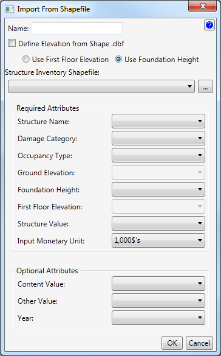
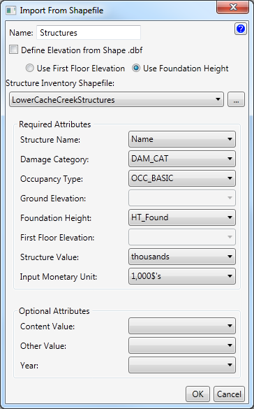
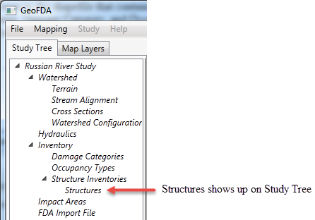

Import From Shapefile
Import structure inventories from a shapefile by entering the information below.

- Enter the name of the structure inventory.
- (Optional) Check box:
- Select Difine Elevation from Shape .dbf to define the elevation from a database file. This option enables the First Floor Elevation drop down box. This is now a required entry.
- Radio buttons:
- Select Use First Floor Elevation to use the first floor elevation instead of the foundation height. This will enable the First Floor Elevation dropdown box, and disables the Foundation Height dropdown box. The First Floor Elevation dropdown box is now a required entry.
- Select Use Foundation Height to use the foundation height instead of the first floor elevation. This will enable the Foundation Height dropdown box, and disables the First Floor Elevation dropdown box. The Foundation Height dropdown box is now a required entry.
- Select or browse to the Structure Inventory Shapefile. This selection loads the Attributes dropdown boxes with applicable options.
- Required Attributes:
- Select from the dropdown boxes the applicable value for the attribute.
- Optional Attributes:
- Select from the dropdown boxes the applicable value for the attribute.
Example

After clicking the Ok button...
